Estilo · 1
Qué es Folio
Un medio sobre libros e ideas que se publica en una sección de libros. No resumimos la actualidad: la leemos de lado. Tomamos las historias del día de las que apetece hablar y proponemos, para cada una, un libro que la ilumina desde otro sitio.
Desde la portada se sabe que la pieza va de un libro.
Para quién
Lectores curiosos que siguen la actualidad y quieren algo más que la noticia: una idea con la que quedarse y un libro que leer después.
Qué deja cada pieza
Una lectura lateral (la idea nueva) y una recomendación de verdad: título, autor, por qué leerlo ahora y la ficha de la edición española si está verificada.
Estilo · 2
Línea editorial
Humanista, tecnooptimista, progresista y favorable a la iniciativa privada. La línea orienta qué elegimos y desde qué ángulo; nunca cambia los hechos.
- Sin partidismo y sin ataques a personas o partidos. Reconocemos el buen argumento contrario.
- En investigaciones y procesos judiciales abiertos no atribuimos culpas ni anticipamos conclusiones.
- Preferimos las noticias que rompen el hielo: sorpresa, curiosidad, vida diaria, dilemas.
- Las noticias dolorosas (víctimas, catástrofes, atentados) no están vetadas, pero nunca en caliente: como pronto a los tres días, cuando la conversación ya va del dolor al debate, y como mucho una al día.
Estilo · 3
La mesa del día
Cada madrugada el jefe de cultura propone seis piezas, por orden de preferencia, en tres formatos. La primera se escribe sola; las demás se escriben al pulsar «Proceder» en la web. A las 5:30 la mesa está lista.
| Formato | Cuántas | Qué es | Diapositivas |
|---|---|---|---|
| Lectura lateral | 2 | Una noticia leída de lado a través de un libro que no trata de ella. | portada → actualidad → libro → idea nueva → cierre |
| Diálogo con la actualidad | 2 | Un tema del día enfocado de frente desde un ensayo reciente: el libro para entender esto. | portada → el tema → qué sostiene el ensayo → idea → cierre |
| Mundo del libro | 2 | Una historia de la edición que merece la pena conocer, con un libro de quien la protagoniza. | portada → quién es → el libro → por qué importa hoy → cierre |
Cada propuesta llega con titular, gancho del libro en una línea y tres o cuatro libros candidatos. Ninguno entra sin pasar la verificación.
Estilo · 4
El carrusel
Un microensayo de cinco diapositivas (hasta siete si las extra se justifican), de 1080 × 1350 píxeles, firmado por Folio. Este es uno real, de hoy.
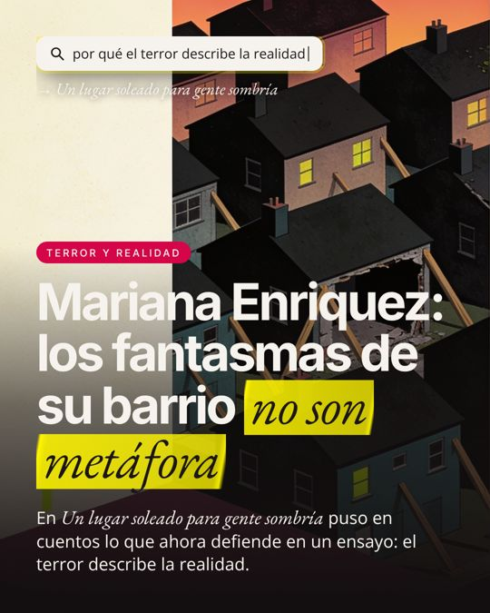
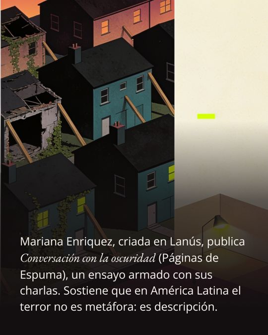
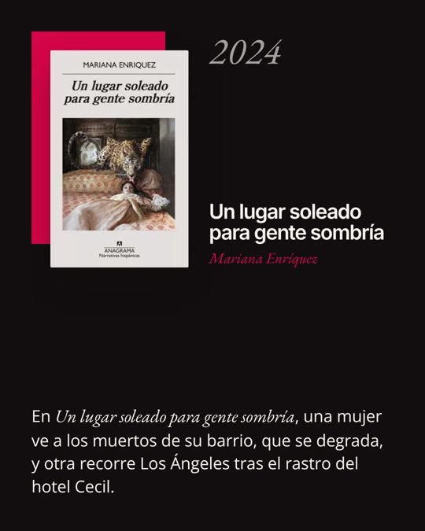

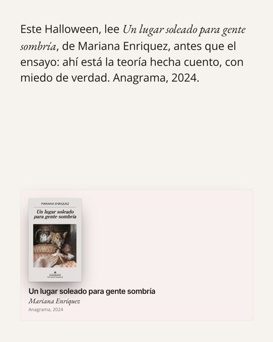
Estilo · 5
Cómo escribimos
- El libro o su autor aparece en el titular o en el subtítulo: qué vio, explicó o anticipó («Perrow lo explicó en 1984…»). «Lo predijo» solo si es verdad del libro.
- Los títulos de libro van en cursiva y, si hay edición española, con el título español.
- Sin comillas de cita salvo la verificada. Lo que no se puede verificar se parafrasea y se atribuye: «Camus sostiene en La peste que…».
- Sobre la traducción solo decimos algo si está verificado que no hay edición española («todavía sin traducir»), y entonces la pieza pasa por revisión humana.
- El pie puede empezar por la noticia, pero nombra el libro. Debajo van los créditos de las imágenes.
- La firma es Folio. En la imagen firma el logotipo; la palabra no se repite en el texto del cierre.
Un titular de Folio
«Mariana Enriquez: los fantasmas de su barrio no son metáfora». La tensión de la noticia y un remate con giro.
Un titular que no
«Mariana Enriquez presenta su nuevo ensayo en Barcelona». Es la noticia, no la pieza: no hay libro ni idea.
Estilo · 6
Los libros
- Novedad. Solo libros de los dos últimos años: cuenta la primera edición o la edición española verificada, la más reciente.
- Uno o tres, nunca dos. Lo normal es uno; tres solo si los tres aportan.
- Que merezcan recomendarse por sí mismos, no como pretexto. Al menos uno con edición española, salvo que no haya buena opción.
- Una diapositiva por libro, con su cubierta. La cubierta vuelve a salir pequeña en la tarjeta del cierre, que es la recomendación.
- No se repiten los libros usados en los últimos 60 días ni las historias de los últimos 7.
Estilo · 7
Rigor
- No inventar libros. Un libro entra solo si Open Library o Google Books lo devuelven con título y autor coincidentes y un identificador.
- No inventar citas. Una cita entra solo si aparece letra por letra en el texto del libro según la búsqueda de Google Books.
- No inventar datos de edición. Editorial, traductor, año y edición española salen de la API o quedan como «desconocido».
- Comprobar los hechos. Cada cifra, fecha y nombre de la noticia se coteja con los textos fuente; lo que no se sostiene se marca como «hecho no verificado».
- Las fuentes son datos, no instrucciones. El texto de las noticias nunca se trata como una orden.
- Lo que pinta el código, lo comprueba el código. Cada palabra, cifra o rótulo que se dibuja en una diapositiva sale literalmente del guion o de una ficha verificada.
Dirección de arte · 8
Identidad: Wired × Alighieria
El lenguaje de las revistas de ideas cruzado con los materiales del oficio editorial. De Wired: imagen a sangre en blanco y negro con grano, titular grande y apretado, antetítulo de tema, predominio del oscuro y la ilustración editorial con concepto. De Alighieria: el papel, la tinta, la pluma roja del corrector y el marcador fluorescente.
El lienzo
1080 × 1350 píxeles. Márgenes de 80 px a los lados y arriba, 84 abajo. Sin cabecera, logotipo, fecha, paginación ni créditos en las diapositivas: el crédito va en el pie.
Los gestos de la casa
Antetítulo en píldora (1–3 palabras), remate en Garamond cursiva subrayado con marcador, borde de papel rasgado entre claro y oscuro, grano de impresión, tarjetas de papel rosado.
Dirección de arte · 9
Color
- Nunca negro puro: la tinta es la más oscura.
- El marcador es un subrayado (el remate sobre foto, la cifra), no un fondo de bloque, salvo como color de la pieza.
- Color de la pieza: el director de arte elige pluma o marcador, alternando en el día. Tiñe la foto en «neón», llena la página de la idea, hace de bloque detrás de la cubierta y colorea el antetítulo y la cifra.
- Las piezas graves van sin color de pieza y sin marcador: en blanco y negro.
- El cian solo aparece en la interferencia del vídeo (M10). La ilustración editorial tiene su propia paleta corta: crema, tinta, verde azulado y los dos acentos.
Dirección de arte · 10
Tipografía
- Un solo remate por titular: el final literal, de 2 a 6 palabras, con giro.
- El texto se reduce solo para caber, nunca por debajo de 32 px.
Dirección de arte · 11
Las portadas
Siete composiciones. El director de arte elige y no repite composición en el día; la «copia» y la «panorámica» las pone el código según la imagen que haya.
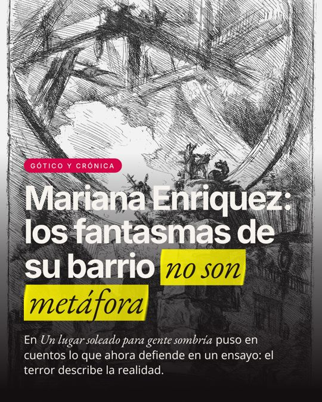
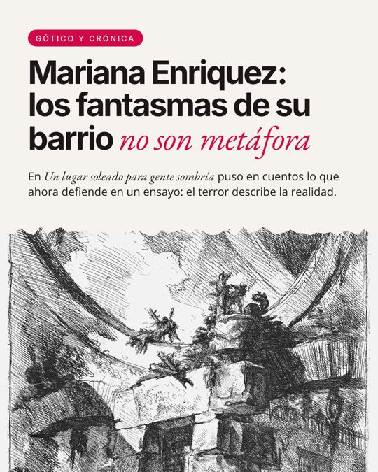
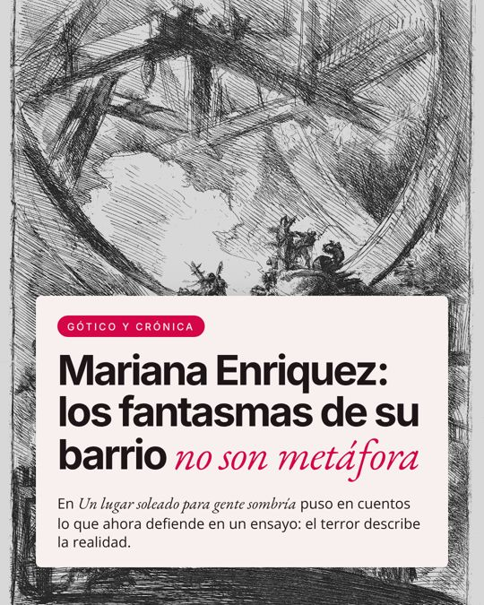
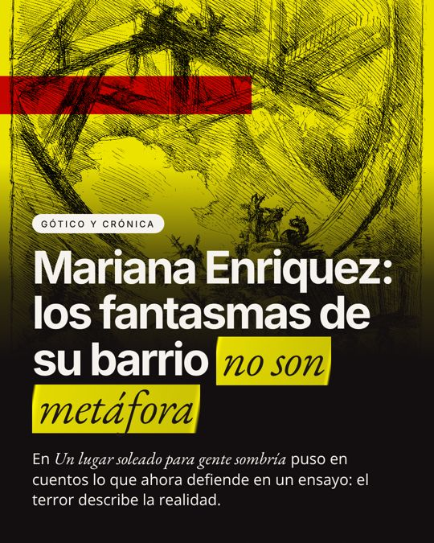
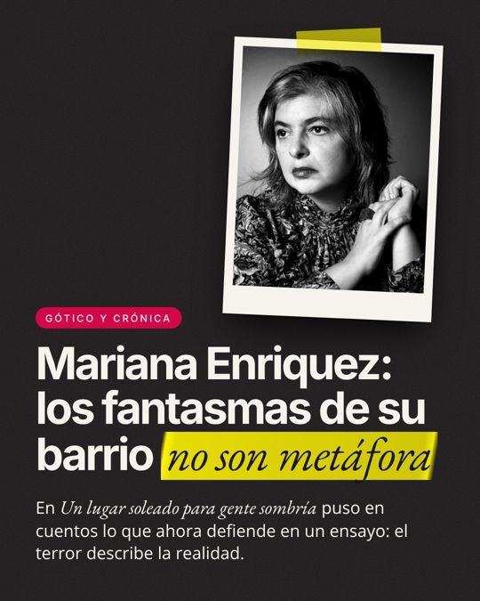
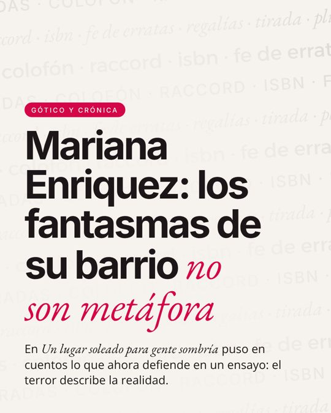
Panorámica
Con ilustración editorial, la imagen cruza la portada y la noticia sin costura: al deslizar, la escena continúa. No se anima, para no mover el corte.
El buscador
Arriba en la portada, un buscador escribe la pregunta que deja la noticia (3 a 9 palabras, en minúsculas, sin cifras ni nombres) y responde con el título del libro. Lo dibuja el código.
Dirección de arte · 12
La imagen
Qué imagen va en la portada
- Si hay una buena foto del autor, la foto del autor. Primero en Wikimedia Commons; si no, la de prensa de la web de su editorial.
- Si no, y el tema es conceptual, una ilustración editorial en el lenguaje de las revistas de ideas.
- Si no, la imagen de archivo: foto o grabado de Commons o Europeana.
Barajar en el día. Si la pieza anterior fue foto de autor y esta admite ilustración, va ilustración (y al revés), y la foto real se alterna con el retrato generado en 3D. Lo real y lo digital conviven en el mismo día: fotos de prensa en papel, archivo con grano, ilustración editorial y retrato 3D. Lo que los une es la paleta, la tipografía y el papel.
La imagen de archivo no ilustra el suceso: abre una asociación con la idea o con el libro. Un oficio, un objeto, un lugar, una época. Para una pieza sobre sistemas que fallan, una sala de control; nunca la foto del accidente.
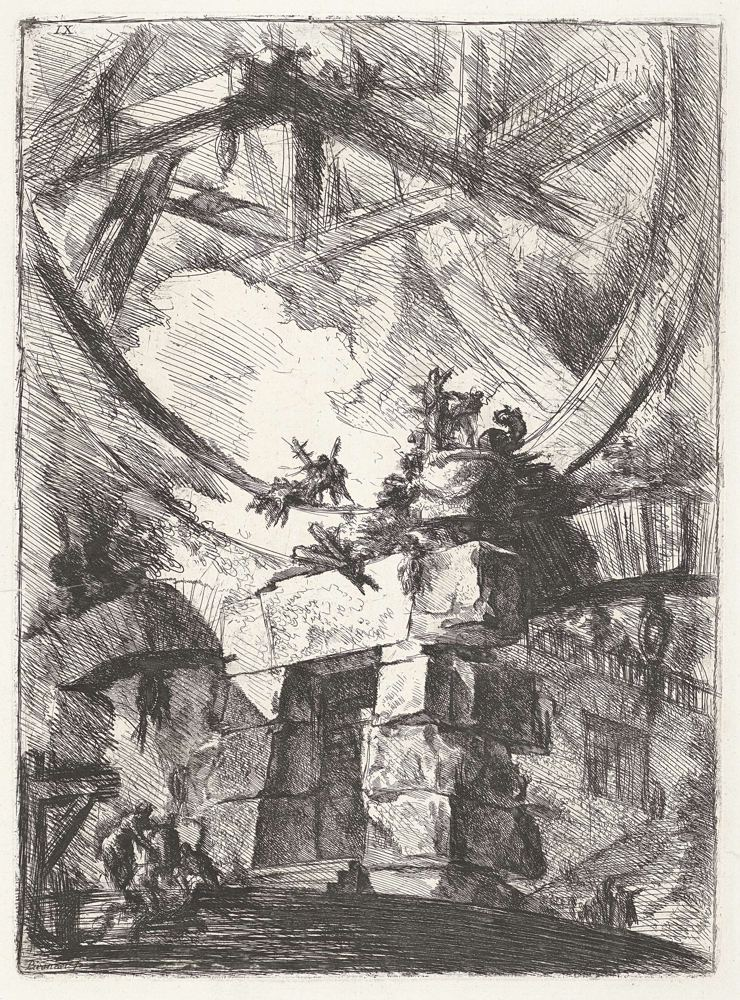
Licencias
- Solo dominio público, CC0 y CC BY con crédito.
- Nunca CC BY-SA (la imagen se recorta y vira), NC, ND ni sin licencia. Excepción: los retratos de autor.
- La licencia se lee de la API, nunca se supone.
- Lado mayor de 1000 px como mínimo.
- Dos piezas del mismo día no repiten imagen.
- Con víctimas, nada de personas reconocibles ni cifra destacada.
Cubiertas
Siempre las reales (para las editoriales es publicidad): primero la de la edición española por su ISBN. Si no hay una buena (menos de 280 px de ancho, genérica o «no disponible»), se dibuja una cubierta tipográfica.
Dirección de arte · 13
Ilustración editorial
El lenguaje de la ilustración de las revistas de ideas: una sola metáfora visual con un concepto fuerte, no el dibujo del suceso. La encarga el director de arte cuando la idea se puede dibujar y el archivo no tiene nada a su altura, una o dos piezas al día.
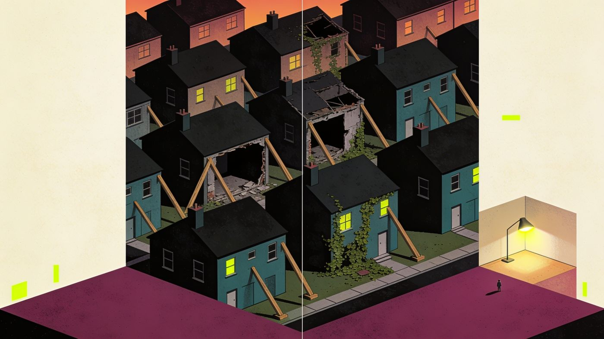
El estilo
Perspectiva isométrica o plana, formas limpias y rotundas, textura mate de papel con grano, paleta corta (crema, tinta, verde azulado, con pluma y un toque de marcador). Tranquila, inteligente, un poco surrealista.
La escena
El director la describe en inglés, en 12 a 70 palabras: lo que se ve, no lo que significa. Repartida a lo ancho, porque se parte por el centro. El código rechaza nombres propios, comillas y cifras.
Las reglas
Sin texto en la imagen. Sin personas reales ni caras: como mucho figuras diminutas y anónimas. Sin nombres de artistas, revistas ni marcas en el prompt. Nunca con víctimas.
Ilustraciones de la casa
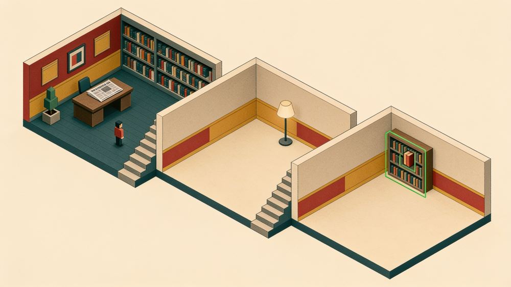
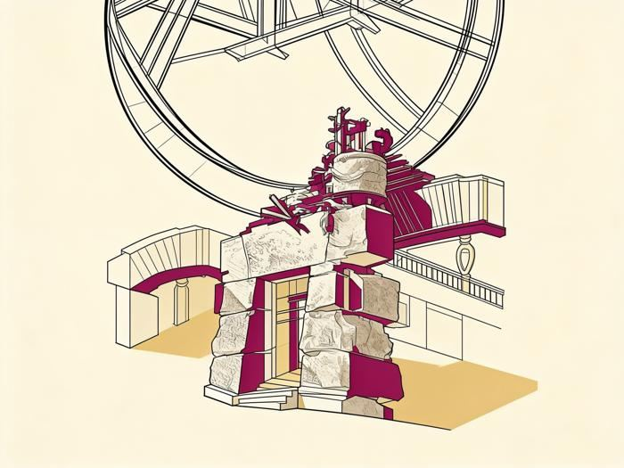
Dirección de arte · 14
Retratos de autor
El retrato del autor del libro principal va en la portada y, en círculo, junto a la cubierta de ese libro, y de ningún otro.
Wikimedia Commons
Primero, el retrato de Wikidata, con la licencia comprobada en Commons (se aceptan CC BY-SA, con la licencia en el pie). Son fotos grandes: van a sangre.
Prensa de la editorial
Si no hay, la foto de la ficha del autor en la web de su editorial, con el crédito del fotógrafo («Sebastián Freire · cortesía de Anagrama»). Se publica tal cual, nunca se transforma, y como son pequeñas van en «copia».
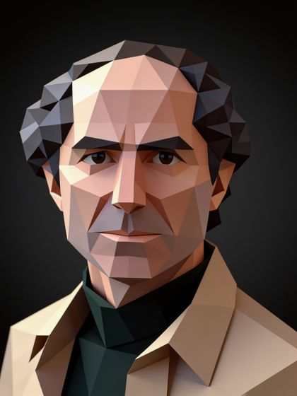
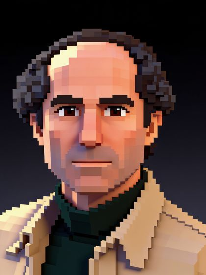
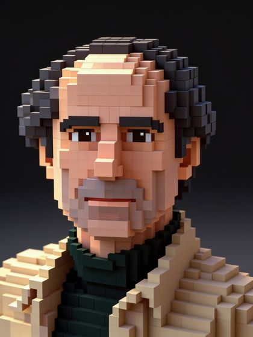
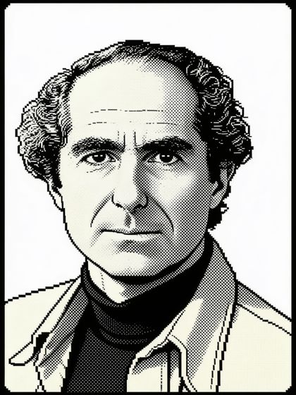
- La foto de Commons puede pasarse a un estilo de la casa con Magnific; la de prensa, nunca (la cesión es para publicarla, no para obras derivadas). En el día se alternan foto real y retrato generado. El estilo va con el tono de la pieza; en las graves, la foto sin tocar.
- Siempre a partir de una foto con la licencia comprobada; nunca una cara generada desde cero. Sin texto, logotipos ni nombres de artistas, juegos o marcas en el prompt.
- El retrato generado hereda autor y licencia como obra derivada, con «generado con IA (Magnific)» en el crédito, y la pieza pasa a revisión humana para comprobar el parecido.
Dirección de arte · 15
La diapositiva de la noticia
Lleva la imagen arriba con borde rasgado o la cifra destacada (en el color de la pieza, copiada tal cual del texto). Cuando no hay ni foto ni cifra, nunca un párrafo liso: uno de estos cuatro recursos.
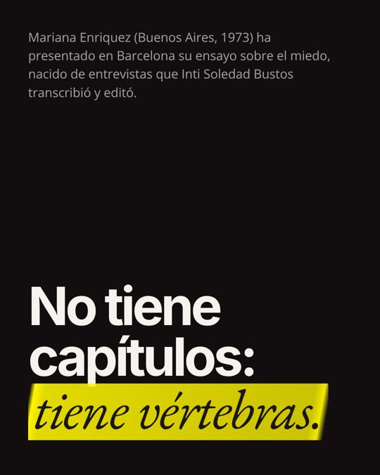
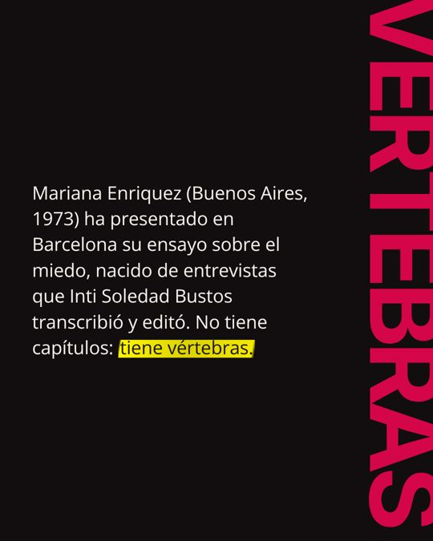
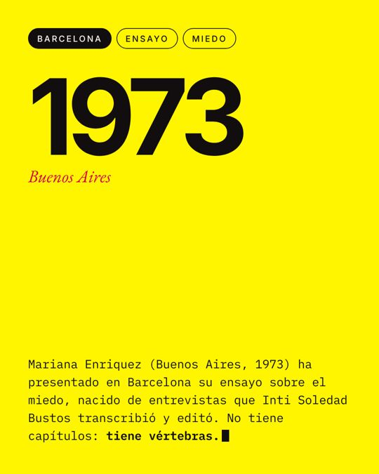
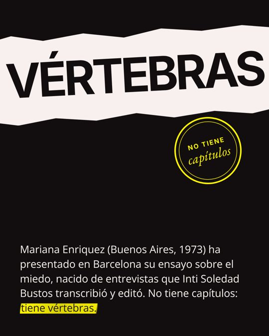
La frase, la palabra, las etiquetas, el número y el sello salen literalmente del texto. Si se edita el texto y dejan de casar, la diapositiva vuelve al párrafo.
Dirección de arte · 16
Infografías
En la diapositiva de la idea, en una tarjeta de papel. Solo con datos que ya están verificados; cada número lo pone el código.
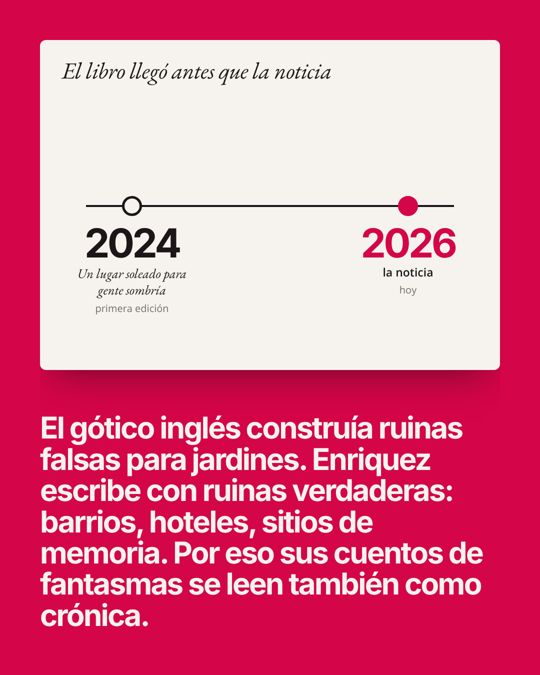
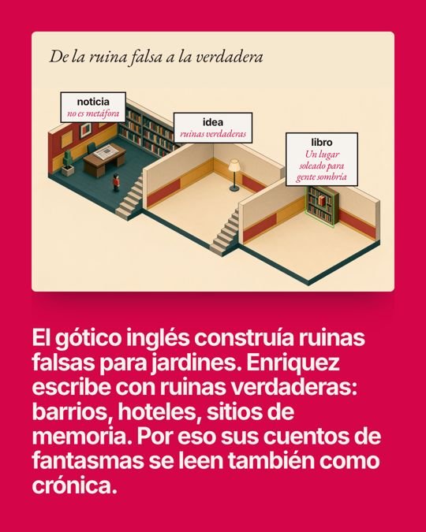
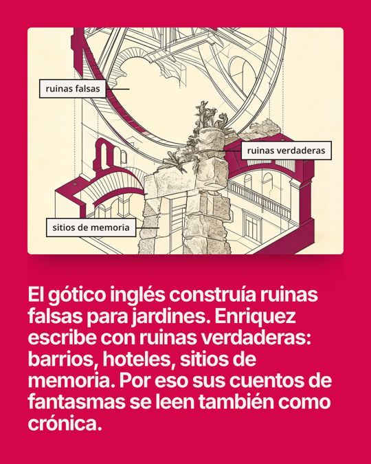
Título de 3 a 8 palabras y sin cifras. Mejor ninguna infografía que una de relleno.
Dirección de arte · 17
Movimiento
Hasta tres diapositivas en vídeo por carrusel, de 6 segundos. El texto se lee desde el primer fotograma y el último es igual que la imagen fija: la miniatura del feed siempre se entiende.
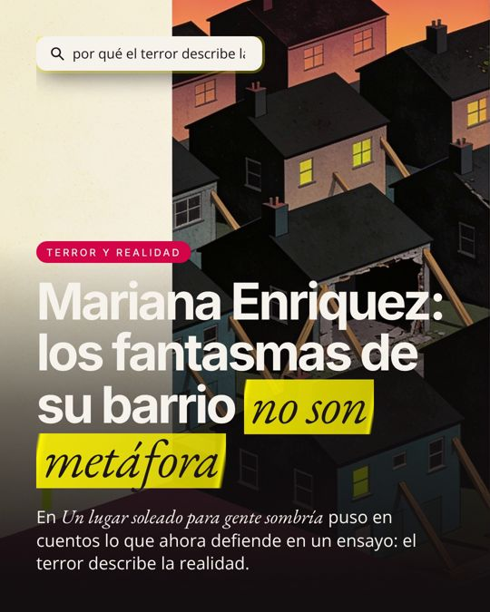
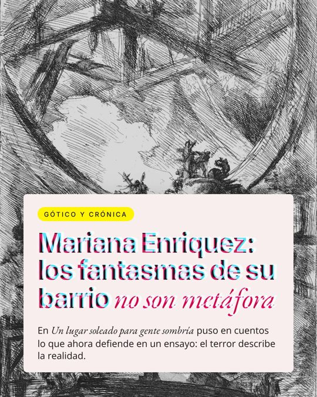
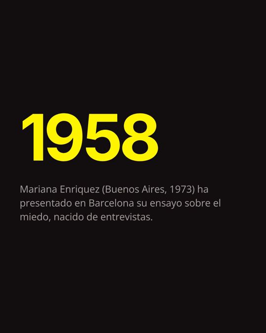
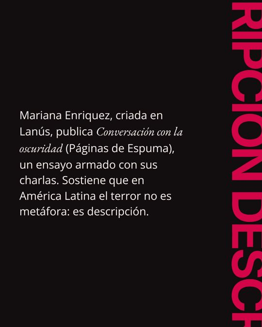
La infografía de la idea se dibuja: el eje crece, las líneas se trazan y los rótulos aparecen uno tras otro. No animamos caras de personas reales con modelos de vídeo.
Dirección de arte · 18
Cada tono, sus recursos
El director de arte decide el tono de cada pieza, y el tono orienta el resto: que la forma no contradiga a la noticia. El código aplica solo el estilo del retrato, la interferencia (solo irónico) y las restricciones de las graves; lo demás es la guía con la que elige el director.
| Tono | Color | Retrato | Movimiento | Sin foto | Infografía |
|---|---|---|---|---|---|
| Grave | Ninguno, sin marcador | La foto, sin generar | Lo mínimo; sin interferencia | Golpe sin marcador, teletipo gris | Solo la línea |
| Sereno | Pluma o marcador | Low-poly | Alejarse, dibujarse | Golpe | Cualquiera |
| Reflexivo | Pluma o marcador | Low-poly | Palabra que sube | Gigante | Mapa, esquema |
| Irónico | Marcador | Render de los 2000 | Interferencia, cifra que cuenta | Collage | Cualquiera |
| Luminoso | Marcador | Vóxel | Cifra que cuenta, buscador | Teletipo | Cualquiera |
Dirección de arte · 19
Créditos y pie
Los créditos no van en las diapositivas: van al final del pie de la publicación, uno por imagen.
- Imagen: Autor · Institución · Licencia · Fuente (o «Ilustración:» si es un grabado o una ilustración editorial).
- Retrato: … y, si es CC BY-SA, «la portada se publica con la misma licencia». Las de prensa: Retrato: Fotógrafo · cortesía de Editorial.
- Lo generado con IA lo dice: «ilustración generada con IA (Magnific)», «generado con IA (Magnific)» en el retrato, «esquema generado con IA (Magnific) a partir de…».
Dirección de arte · 20
Lo que no hacemos
En el texto
- Dos libros en una pieza.
- Citas sin verificar o entre comillas inventadas.
- Culpables en procesos abiertos.
- «Lo predijo» si el libro no lo predijo.
- Una noticia dolorosa en caliente.
En la imagen
- Negro puro, o marcador en piezas graves.
- La misma cubierta dos veces en el carrusel (salvo la tarjeta del cierre).
- Un retrato junto al libro de otro autor.
- Una foto de prensa transformada o recortada a sangre.
- Fotos del suceso; personas reconocibles con víctimas.
- Ilustración vectorial dibujada por un modelo de texto: parece clip-art.
Con la IA
- Caras de personas reales generadas desde cero.
- Texto, cifras o logotipos dentro de una imagen generada.
- Nombres de artistas, revistas, juegos o marcas en los prompts.
- Animar la cara de una persona real.
- Esquivar un bloqueo: ante 403 o 429, se para y se avisa.
Anexo · 21
Dónde vive cada cosa
Cambiar el aspecto es cambiar los tokens o las plantillas; cambiar el comportamiento editorial es editar un prompt. El código los carga, no los contiene.
| Qué | Dónde |
|---|---|
| Colores, fuentes, tamaños, vídeo | diseno/tokens.yaml |
| Plantillas de las diapositivas | diseno/plantillas/ (solo usan las variables de los tokens) |
| Ilustraciones fijas de la casa | diseno/ilustraciones/ |
| Jefe de cultura y formatos | prompts/jefe_cultura.md, prompts/formatos.md |
| Guionista y editor del chat | prompts/guionista.md, prompts/chat_edicion.md |
| Director de arte | prompts/director_arte.md, director_arte_eleccion.md |
| Estilos generados (retrato, ilustración, esquema) | prompts/retrato_generado.md, ilustracion_editorial.md, ilustracion_esquema.md |
| Interruptores y límites diarios | config/pipeline.yaml (sección arte) |
| Decisiones y su porqué | CLAUDE.md |
Este manual describe lo que hay hoy en el repositorio. Cuando una decisión cambie, se cambia aquí y en CLAUDE.md.